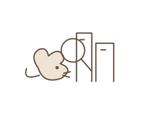

Data Visualization · Tableau

NYC’s Hidden Rat Hotspots
Team project in Tableau analyzing 311 rodent complaints and rat inspections across NYC’s 59 community districts, 2022–2025. Complaints don’t point to the rats: 12 districts are hidden hotspots, and Queens has 27% of residents but only 5.5% of inspections. I built the Queens and Mitigation Zones visualizations.